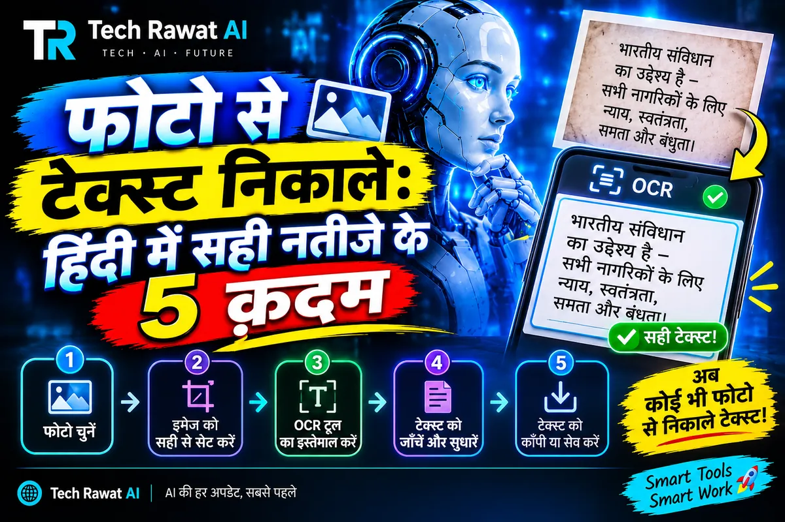

फोटो से टेक्स्ट निकालें: हिंदी में सही नतीजे के 5 क़दम

फोटो से टेक्स्ट निकालें तो सबसे आसान रास्ता फ़ोन का Lens है: टेक्स्ट चुनें और Copy दबाएँ। पर हिंदी में नतीजा मूल से मिलाए बिना न मानें। पहले साफ़, सीधी और अच्छी रोशनी वाली फोटो लें, फिर नाम, संख्या और मात्राएँ देखें, और आधार या बैंक जैसे कागज़ ऑनलाइन कनवर्टर पर न डालें।
फोटो से टेक्स्ट निकालने के कौन से रास्ते हैं?
आम तौर पर तीन रास्ते चलते हैं: फ़ोन का Google Lens, फोटो पढ़ने वाला AI चैटबॉट और कंप्यूटर पर चलने वाला ओपन-सोर्स OCR इंजन Tesseract। तीनों की ताक़त और कमज़ोरी अलग है।
| रास्ता | कब ठीक रहता है | ध्यान रखें |
|---|---|---|
| Google Lens (फ़ोन) | फोटो या स्क्रीनशॉट से तुरंत कॉपी चाहिए | Google खोज के सहायता पन्ने के अनुसार ये सुविधा Android और iOS पर है |
| AI चैटबॉट | फोटो में लिखी बात का सार या साफ़ रूप चाहिए | जवाब में ऐसे शब्द आ सकते हैं जो फोटो में थे ही नहीं, इसलिए मूल से मिलाना ज़रूरी है |
| Tesseract | कंप्यूटर पर कमांड चलाना जानते हैं | फोटो की गुणवत्ता के नियम इसके आधिकारिक दस्तावेज़ में हैं |
हिंदी की सटीकता का कोई आँकड़ा Google के सहायता पन्ने या Tesseract के दस्तावेज़ में हमें नहीं मिला। इसलिए किसी टूल को हिंदी में भरोसेमंद मानने से पहले अपनी ही फोटो पर परखिए। आख़िरी हिस्से में इसकी 15 मिनट की जाँच है।
क़दम 1: टेक्स्ट निकालने से पहले फोटो कैसे खींचें?
Tesseract के आधिकारिक दस्तावेज़ के अनुसार वह कम से कम 300 DPI वाली छवियों पर सबसे अच्छा चलता है, और संस्करण 4 के लिए गहरे अक्षर हल्की पृष्ठभूमि पर होने चाहिए। वही दस्तावेज़ बताता है कि पन्ना ज़्यादा तिरछा हो तो पंक्तियाँ पहचानने की गुणवत्ता काफ़ी गिर जाती है, और छवि में शोर हो तो सटीकता घट सकती है।
ये नियम एक कंप्यूटर प्रोग्राम के हैं। फ़ोन की फोटो पर इन्हें इस तरह लगाया जा सकता है (ये हमारी सलाह है, दस्तावेज़ की बात नहीं):
- कैमरा पन्ने के ठीक ऊपर सीधा रखिए, ताकि पंक्तियाँ आड़ी-तिरछी न दिखें।
- पन्ना फ्रेम में भरकर खींचिए। दूर से खींचकर बाद में ज़ूम करने पर अक्षर धुँधले हो जाते हैं।
- साया या चमक न पड़े। हल्के कागज़ पर गहरे अक्षर सबसे साफ़ पढ़े जाते हैं।
- Google के सहायता पन्ने की सलाह भी यही है कि फोटो साफ़ और अच्छी रोशनी वाली हो।
क़दम 2: फ़ोन पर Lens से टेक्स्ट कैसे कॉपी करें?
Google खोज के सहायता पन्ने में Android फ़ोन-टैबलेट और iPhone-iPad के लिए अलग टैब हैं। Android के क़दम ये हैं:
- Google ऐप खोलिए और खोज पट्टी में Google Lens का आइकन दबाइए।
- कैमरे से खोज वाले हिस्से में खोज बटन दबाइए।
- फोटो खींचिए, या स्क्रीनशॉट वाले हिस्से से पुरानी फोटो चुनिए।
- टेक्स्ट पर टैप कीजिए या बॉक्स के कोने खींचकर पूरा टेक्स्ट घेरिए, फिर टेक्स्ट चुनने वाला बटन दबाइए।
- खुले मेन्यू में Copy दबाइए। यहीं Listen, Translate और खोज के विकल्प भी हैं।
पन्ने के अनुसार चुने हुए टेक्स्ट में फ़ोन नंबर, ईमेल, पता, वेबसाइट का लिंक या पैकेज नंबर हो तो कॉल, संपर्क में जोड़ना, नक्शा या ट्रैकिंग जैसे अतिरिक्त विकल्प भी दिखते हैं। ये जानकारी 7 नवंबर 2026 तक की है; Google ऐप के बटन, मेन्यू के नाम और उपलब्ध सुविधाएँ बदल सकती हैं।
निकाले हुए टेक्स्ट का अनुवाद भी करना हो तो पहले दोनों तरीकों की तुलना देख लीजिए: हिंदी अनुवाद के लिए Google Translate या चैटबॉट में पाँच नमूना जाँच दी गई हैं।
क़दम 3: हिंदी टेक्स्ट को मूल से कैसे मिलाएँ?
टेक्स्ट कॉपी होते ही उसे सही मत मान लीजिए। मूल फोटो और निकला टेक्स्ट अगल-बगल रखकर पंक्ति-पंक्ति मिलाइए। जहाँ ग़लती का नुक़सान ज़्यादा है, वहाँ ये जगहें पहले देखिए:
- संख्याएँ और तारीख़ें: हर अंक अलग से मिलाइए, ख़ासकर रकम और फ़ोन नंबर।
- नाम और पते: वर्तनी में एक मात्रा का फ़र्क भी अलग नाम बना देता है।
- मात्राएँ और जुड़े अक्षर: छोटी-बड़ी इ और ऊ तथा आधे अक्षर देखिए।
- छूटी या दोहराई गई पंक्तियाँ: पंक्तियाँ गिनकर मूल से मिलाइए।
- हाथ से लिखी बातें और हाशिये की टिप्पणियाँ: इन्हें अलग से पढ़िए।
आवाज़ को टेक्स्ट में बदलते समय भी यही मिलान की आदत काम आती है। नाम, संख्या और अंग्रेज़ी शब्द परखने का तरीका Whisper से हिंदी ऑडियो को टेक्स्ट में वाले लेख में है।
क़दम 4: AI चैटबॉट से फोटो पढ़वाएँ तो क्या लिखें?
चैटबॉट से सिर्फ़ "इसे पढ़ दो" कहने पर वह सुधारकर या सार बनाकर जवाब दे सकता है, जबकि आपको जस का तस टेक्स्ट चाहिए। इसलिए निर्देश में तीन बातें साफ़ लिखिए:
फोटो में जो भी लिखा है, उसे जैसा है वैसा देवनागरी में लिखो। अपनी तरफ़ से कोई शब्द मत जोड़ो और कोई वर्तनी मत सुधारो। जो हिस्सा साफ़ न पढ़ा जाए, वहाँ [अस्पष्ट] लिख दो।
पहला वाक्य जस का तस लिखवाता है, दूसरा जोड़-घटाव रोकता है, और तीसरा चैटबॉट को अंदाज़ा लगाने की जगह खाली छोड़ने को कहता है। फिर भी नतीजा मूल से मिलाइए।
चैटबॉट कभी-कभी पूरे भरोसे से ऐसा जवाब दे देता है जो सही लगता है पर होता नहीं। इसकी वजह और पकड़ने के तरीके AI Hallucination क्या है में हैं।
क़दम 5: निजी कागज़ों की फोटो कहाँ न डालें?
आधार, पैन, बैंक पासबुक, कार्ड, दवा की पर्ची या मुक़दमे के कागज़ की फोटो किसी ऑनलाइन कनवर्टर या चैटबॉट में डालने से पहले रुकिए। इस लेख में किसी भी टूल की डेटा-नीति की जाँच शामिल नहीं है, और हर टूल फोटो अलग तरीके से रखता है, इसलिए उसकी गोपनीयता नीति ख़ुद पढ़िए।
सुरक्षित आदत ये है: जितना टेक्स्ट चाहिए, फोटो में सिर्फ़ उतना हिस्सा काटकर डालिए और नंबर वाला हिस्सा छोड़ दीजिए। किन चीज़ों को AI से दूर रखना है और डेटा से सीखने वाली सेटिंग कैसे बंद होती है, ये AI को कभी न बताएँ ये 6 चीज़ें में लिखा है।
15 मिनट में अपनी फोटो पर परख कैसे करें?
- अख़बार की एक कटिंग या किताब का एक पन्ना चुनिए जिसमें कुछ नाम और संख्याएँ हों, और जो निजी न हो।
- क़दम 1 के नियम से उसकी फोटो लीजिए।
- Lens से टेक्स्ट कॉपी करके नोट्स ऐप में चिपकाइए।
- दस पंक्तियाँ मूल से मिलाइए और अक्षर, संख्या तथा नाम की ग़लतियाँ अलग-अलग गिनिए।
- वही फोटो चैटबॉट को ऊपर वाले निर्देश के साथ दीजिए और ग़लतियों की गिनती की तुलना कीजिए।
जिस तरीके में संख्याओं की ग़लतियाँ कम निकलें, उसी को अपनी आदत बनाइए और असली काम की फोटो पर भी मिलान वाला क़दम कभी मत छोड़िए।